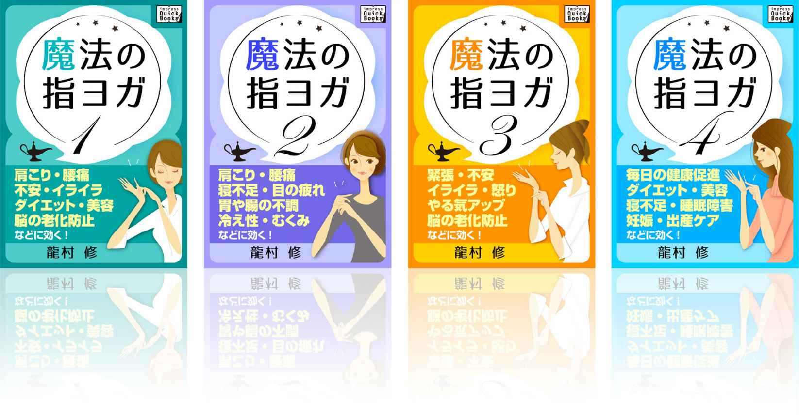

| 魔法の指ヨガ (1) 肩こり・腰痛、不安・イライラ、ダイエット・美容、脳の老化防止などに効く! impress QuickBooks | |
| 龍村 修 | |
| (2015) | |
はじめに ～魔法のようにあなたを癒す～
私は長年、ヨガの指導を行っています。
その中で、ヨガが人の心身のバランスを整え、鍛え、救う姿を多く見てきました。
私が、本シリーズ「魔法の指ヨガ」を書いた理由は、指ヨガは「忙しい人でもできる」ということが最も大きな点です。
もちろん本当の魔法とは違い、タネも理屈もあるのですが、指ヨガは、指と手だけで行うシンプル・簡単なヨガであるにも関わらず、全身のヨガに近い効果が得られます。時間もかからず、道具もいりません。
やろうと思えばすぐその場でできます。
疲れている、ストレスを抱えている、不調を感じている、もしくはそうしたからだからの訴えにさえ気づいていない。そんな忙しい人こそ魔法のように便利な指ヨガを試してみてください。
世界中で人気のヨガ
ご存知のように、インド発祥のヨガは、いろいろなスタイルに分化して世界中に愛好者がいます。日本でもこれまでに何度もブームが起こっています。しかし、中にはヨガに挫 折 した経験がある、という人も。
心身ともに健康になれるヨガ、続けられなかったのはなぜでしょう？
難しい、忙しい、ストイックすぎる？
からだが硬いから...という人も。
また、興味はあるけれどヨガをはじめていない人の中には、ヨガがとても哲学的、宗教的なもので、中途半端な気持ちや興味本位ではじめたら不 謹 慎 かもしれないと思う人もいるようです。
でも、もしもヨガに興味を持ったら、まずははじめてみてほしいのです。
頭で理解するより、まずはポーズから。
そして指ヨガなら、これまでに難しいとか忙しいといった理由でヨガをあきらめてしまった人にも簡単にできます。
あいた時間でいいのです。
オフィスでも、会議室の中でも、通勤電車の中でも、ゴルフのフェアウェイの上でも！
また、逆に寝そべっていてもいいのです。テレビを見ながら、音楽を聴きながら、ヨガを楽しんでください。
手しか使いませんから。
でも、すぐに効果があらわれます。
心もがらりと変わります。
理 屈 は後からついてきます。
本シリーズは、ヨガをまったくしたことがない人か、もしくは以前にやってみようとしたことがあるけれど、何らかの理由で続けられなかった人に向けて書かれています。
まずは実際に指ヨガを知ってもらうということを目的にしていますので、ぜひ気軽に試してみてください。
部分即全体
指ヨガのポーズは、全身を使う全身ヨガをもとに考案され、全身ヨガに近い効果があります。
もともとヨガはポーズによって心身のバランスをとり、
ナディー（気の通り道）を浄 化 し、
プラナ（生命のエネルギー）の通りが良くなり、
チャクラ（エネルギーを貯めるところ）が活性化し、
人が本来持つ力を高めていくという、全体に働きかけていくものです。
東洋の身 体 観 には「全 体 即 部 分 、部 分 即 全 体 」という見方があります。
手や足、耳などのひとまとまりの部分は、それぞれが全身につながる情報を持っているというものです。
また、指ヨガにおいては、手を「露 出 した脳」と考え、手指への刺激で脳を活性化させたり、緊張をときほぐしたりします。
手と全身のつながりを理解するのに良いのが、韓国の高 麗 手 指 鍼 という鍼灸 のための相 応 図 に、私が40 年に及ぶヨガの経験によって得られた考察を加 味 した指ヨガ相応図です。
龍村式指ヨガ 相応図
１ 親指：副交感神経・脳・呼吸器系
２ 人差し指：肝臓・胃・小腸・すい臓・脾臓・消化器系・大腸
３ 中指：心臓・血管・腎臓・循環器系
４ 薬指：神経系・リンパ系・循環器系・内分泌系
５ 小指：生殖器・肺・交感神経・心臓・循環器系・小腸
※ 中指は脊柱と関連しているとともに循環器とも関連しています。
やってみよう！ 指ヨガ
本シリーズは、ヨガははじめてという方でも簡単に無理なく実践できるように解説しています。
まずは、イラストを見ながらポーズの真 似 だけ。つぎに、ステップアップのためのコツを実践してみてください。
力の加減は、付記されている指圧メーターアイコンを参考にしてください。あくまでも参考で、必要な力の強さは人それぞれです。
痛いほど強く押したり、ひねったりする必要はありません。気持ち良く感じる程度の力加減が理想的です。
また、指ヨガは呼吸法を組み合わせることで真の力を発揮します。
説明文中や、ポーズに合わせて行う呼吸を説明する呼吸アイコンで、呼吸について説明していますので参考にしてください。
ポーズに合わせて、呼吸法まで意識するのは最初は難しいかもしれませんが、慣れると特別に注意しなくても自然にできるようになります。
Step1
まずは本を見ながらポーズの真似
Step2
コツを見ながら、細かいところを意識
Step3
動きに合わせて呼吸も意識して行う
目次
現代を生きる人と指ヨガ
指ヨガは、ヨガの中から自然に生まれたもの
指ヨガは私の指導生活の中で自然発生的に生み出されたものです。
私は以前からヨガの指導者として、ヨガをもっと多くの人に知ってもらいたい、本当に困っている人、助けを必要としている人にヨガに接してもらいたいと考えていました。また、そういう人たちに、ヨガが難しい、ヨガを行う時間やスペースが持てないという悩みを持つ人が多いことが課題であるとも思っていました。
1980年ごろ、脳疾患を患った受講者に手のマッサージとともにヨガを指導したところ大変効果が上がったという経験をしました。その人は、病気の後遺症でからだも動かしづらく、とても硬くなっていたのですが、リラックスするために手の指圧を施しながらヨガを行ったところ、全身の柔軟性が高まり、運動機能の向上や精神的な安定など、ヨガによる効果も高くなったのです。
もともと部 分 即 全 体 の考えのあるところに、そうした経験などが積み重なって手指を使ったヨガがだんだん形作られてきました。
手指と全身の関わりを示す高 麗 手 指 鍼 をもとにした相応図によって、指ヨガはよりイメージしやすいものとなり、いつでもどこでもできるヨガとして広まってきました。今では、指ヨガのクラスを開講するとすぐに申し込みが集まって定員がいっぱいになります。
また現在は、指ヨガの指導者の育成に力を入れています。登録されている指導者の数は500名を超えています。
指ヨガは、海外でも知られるようになりました。私は定期的、不定期的に外国でヨガ指導を行っているのですが、「指ヨガの指導を」と求められることも増えてきました。
本シリーズ執筆中にもヨーロッパ、アメリカで、指ヨガのクラスを開催しましたが、いずれも大盛況で熱気あふれるものでした。鍼灸やツボなどで部分即全体の考えに比較的なじみのある日本人より、はじめて経験する海外の人にはさらに新鮮で驚きがあるようです。こうして指ヨガは今、世界中に広まってきています。
指ヨガはお手軽すぎ？
ところで、指ヨガは普通のヨガに比べてイージーで、お手軽なものなのだな、と思われる方もいらっしゃるでしょう。確かに神秘的かつ崇 高 と思われることの多いヨガのイメージに対して、指ヨガの「いつでも、どこでも、簡単に」という〝とっつきやすさ〟はそう見えます。
私は指ヨガについて、そういう風に考えてもらってもいいと思っています。ヨガの道は深 遠 で、究 めようとすれば果てしのない修行の道となりますが、決してその門 戸 は狭いものではありません。みなさんがそれこそ気軽にそれぞれのきっかけで始めてくれれば良いのです。その入口のひとつに指ヨガがあるのです。他の入口に比べたら確かにお気軽に入っていくことができますね。でも、入口が簡単だからといって、ヨガの精神に添わないとか劣るとかいうようなことはないと考えます。
ヨガの恵みに接したくてもそうできない方々が、指ヨガによってヨガと出合うことができれば、ヨガ指導者としては喜ばしい限りです。
指ヨガはヨガです
指ヨガの手 技 をパッと見て、手のツボ押し健康法や、指もみマッサージといったことと似ているなと思う人も多いと思います。
確かに、手や指をもんだりさすったりするところは似ていますね。
でも指ヨガはあくまでもヨガとして、ヨガのトレーニングの中から考案されたものです。れっきとしたヨガなのです。
まず、手を全身の縮図ととらえ、指をひねったり反らしたり、回したりすることでポーズをとります。
全身ヨガにおいても、ポーズをとればビギナーの人であっても何らかの効果があらわれますが（ちなみに、ポーズをとらないヨガもあります）、鍛 錬 したヨガ上級者はもっと大きな深い効果を同じポーズから得ることができます。指ヨガも同じです。何度も行い、コツをつかみ、上達することによって得られる効果も大きくなるのです。まずは本書を読んでポーズを真似てみてください。
無理せず、リラックスして行える範囲で試してください。もうそれだけで、指ヨガはあなたに変化をもたらします。
そのうえでポーズがあらわす意味について考えてみてください。そう言われなくてもきっと自然に考えるようになるでしょう。ヨガのポーズには調和をとるという意味があります。調和とはバランスです。あなたが日々ストレスにさらされているとしたら、からだのどこかに無意識に力が入り偏 った筋肉の使い方をしているでしょう。あなたが指ヨガの効果を実感したとしたら、そのポーズはあなたのからだの偏りを均 し、調和をとろうとするものでしょう。
指ヨガに限らず、ヨガを行う上では呼吸法が大切なのですが、指ヨガのポーズが上手になるにつれて、ポーズをとるときの呼吸も変わってくることでしょう。呼吸は不思議なもので、普段何 気 なくしている呼吸もそのときのからだや精神の状態に合わせて変化しています。指ヨガで心身に刺激が加わると呼吸も変わります。また、逆に呼吸を変えることで、心身の状態をコントロールすることができるのです。
呼吸の基本は腹 式 呼 吸 です。本シリーズの２～４巻では指ヨガの効果を高めるための４つの呼吸法についても解説していますので、慣れてきたらぜひ呼吸も意識して行うようにしてみてください。
指ヨガは脳に効く
指ヨガにはさまざまな効果がありますが、その中でも得意分野と言えるのは次のようなことです。
・集中力を高める
・精神を安定させる
・からだ全体をリラックスさせ柔軟性を持たせる
・心を強くする
おや？ と思った方もいるかもしれません。
からだが健康になるとか、病気が治るとか、筋力が強くなるといった項目がない、ということでしょうか。
本来、ヨガは呼吸と動作、意識を組み合わせ、人の内部、心に働きかけるものです。からだを鍛えるといった発想はありません。心を整え、バランス力を高める方法としてからだを使っています。結果的にからだも調子が整い、免疫力が増したり、筋力がついたりということはあります。しかし、それがヨガの目的ではないのです。
指ヨガも同様です。手と脳のつながりから、脳に働きかけ、心と全身の調和をとります。
まず指ヨガはあなたの内面に働きかけ、集中力を高め、ここぞというときに最大の実力を発揮させます。
また精神を安定させ、くよくよ悩んだり、はらはら心配していたつらい時間を穏 やかで前向きなものにします。
無意識に硬く力が入っていたからだもゆるめられ、リラックスできます。しなやかに、伸やかに活動することができるようになります。
そして、指ヨガの働きはあなたの心を強くもします。ストレスに負けない強さを持たせ、ストレスに対処する能力を高めます。
こういったことによって、緊張で乱れていた自律神経も正常化し、血液の循環も良くなり、不快に感じられた症状も軽くなります。
このようにして、精神をコントロールできるようになると、肉体も、本来持っている力を十分に発揮することができるようになるのです。
LESSON 1
何はともあれ試してみよう
案ずるより産むがやすしです。
ここでは、効果を実感しやすい指ヨガを紹介しますので試してみてください。
準備
肩を動かさず、首だけ左右に動かして見えたところを覚えておきます。
ここから指ヨガスタート
Step1
片手の中指の爪の両側をもう一方の指で持って第一関節を動かすように左右に10回ひねります。
Step2
次にもう少し下、第一関節と第二関節の間辺りを持って第二関節を動かすように10回ひねります。
結果
さきほどと同様に首を動かし、見えたところを比べてみてください。首の動きが楽になって、さきほど見えなかったものも見えるようになりましたね。
指ヨガを行うときは...
・呼吸を止めずに行います
・押す強さははじめは弱めに。慣れてもつらい痛みを感じるほど強く押さないように。痛いけど気持ち良いくらいの力の強さで。
・爪で皮膚を傷つけないように
・からだの中心に向かって、垂直に力が加わるように押します
試してみたい指ヨガのポーズ
準備
両腕を組んで上に伸ばします。また肩の関節をぐるぐる回してみます。こうして肩の動かしやすさをチェックします。
Step1
中指と人差し指の間を、反対の手の親指でぎゅっと押します。
Step2
人差し指と薬指を一本ずつ持って回します。
Step3
中指を持って反らします。
結果
さきほどと同じように腕を動かしてみてください。腕の動きが楽になったのが感じられたでしょう。
息を吐きながら指のつけ根を動かすようにしっかり回します
こんな人にやってほしい
からだの中で指が意味するものとは
指ヨガを手で行うことには二つの意味があると考えます。
私は私自身のヨガの師匠である沖 正 弘 先生に「手は露出した脳である」と教えられました。手は全身の縮図であり、同時に脳の縮図です。手を刺激すると、脳に刺激が伝わって神経伝達の新しい回路が開くという考え方です。
手に関係している脳 細 胞 の量は、たとえば背中全体よりはるかに多く、指を動かすことは脳を活性化する効率が高いのです。
人間の手は細かい作業をするために神経が集中しています。手を動かすと、脳は忙しく働きます。逆に手をうまく使えるようになることは、脳の働きを良くすることでもあります。手でヨガを行うことは、全身のヨガに通じる非常に効率の良い方法なのです。
また、私は全身でヨガを行うことが難しいという人にもヨガに接してもらう方法を長年考えてきました。部分即全体の考えで行くと、眼や耳、足などでもヨガを行うことができます。
そうした中でもとりわけ指ヨガのニーズが高いのは、気軽に行えるからでしょう。全身のヨガでは、道場へ来ればどんなポーズでもためらいなく挑戦できますが、せっかく習得したポーズを日常の生活の中で再現しようとすると非常に時間と場所を選びます。手ではそうした心配がいらず、いつでも、どこでも、目立たずさりげなく行えます。
「困った」とか「つらい」などと思ったとき、すぐにそうしたトラブルに対処できたらいいと思いませんか。通勤電車でも、会議室でも、今やろうと思ったらその場で行えるのが指ヨガの良いところです。
ペンフォードの脳マップ
脳と全身の感覚、運動のつながりをあらわした図です。手に関連する部分が脳の中で大きな面積を占めていることがわかります。
忙しい人にこそ指ヨガを
忙しい世の中で、多くの人が疲れたり、不調を感じています。日中忙しくて疲れるようなことをしても、嫌なことがあったり、疲れるほど気を使ったり、多少ストレスがあったとしても、夕方以降は癒しがあって、次の日までに十分に疲れをとることができれば心身の調和は保たれるのですが、そうできない人はたくさんいます。
あまりにも忙しくて自分を助ける暇もないのです。また忙しいことに慣れすぎてしまって心身が疲れてＳＯＳを発していることにも気づいていないこともあります。助けが必要な人ほど、時間も余裕もなく、心身の調和が崩れていってしまうのです。
私は忙しい人にこそ、ヨガの恵みに接してほしいと思っています。
指ヨガなら、忙しい人でもできます。
指ヨガは立ったままでも、寝たままでも良い
指ヨガは、手だけで行うのですから、極端なことを言うと手以外の部分は関係ありません。立っていても、座っていても良いのです。とはいえ、けがのないように安定した姿勢で行うべきです。服装や場所などは関係ありません。道具も使いません。
ですから、エレベーターや電車の中で立ったままでも、オフィスでイスに座ったままでも行えます。肉体を動かしての仕事はもちろん疲れますが、長時間イスに座りっぱなしでパソコンや資料に目を走らせているというのも非常に疲れます。指ヨガなら、多忙なビジネスマンでも調子を整え、より大きな成果を上げることができます。
ご家庭でもお料理の合間にキッチンで行えますし、お子さんの様子を見守りながら短い時間でできるので、忙しいお母さんにもできます。主婦業は、細 々 した用事を自分で段取りをつけてやっていかなければならないうえに、小さな子に応対したり、ＰＴＡやママ友、親族、ご近所づき合いなど社交も必要で、それこそ元気で気力がなければやっていられません。
こうした忙しい方々にこそ指ヨガを行ってほしいと思います。
立っていても座っていてもどこでもできる指ヨガですが、逆に寝たままでも行えます。
夜、寝るためにからだを横たえたとき、指ヨガを行ってください。疲れをとり、気持ちをリラックスさせ、より良質な睡眠を得ることができるでしょう。本シリーズ２～４巻の巻末ではとても簡単な瞑想法を紹介しています。リラックスし、からだからの声に耳を傾ける時間を作るためにも指ヨガと併せて日課にすることをおすすめします。
シリーズ２巻に収録
元気のないときにも
指ヨガは、それこそ寝たままでもいいので、持病があるという人にもおすすめです。布団の中で横になったまま、痛みやつらさを感じない程度にやってみてください。
全身でヨガをしようと思うと、それなりの労力を要しますが、その点指ヨガは筋力の弱った人、立ったりからだを支えることが難しい人にもできます。入院してからだを動かせない人から指ヨガが大変役立ったというハガキをよくもらいます。指だけですからそんなに疲れません。からだへの負担が少ないのも指ヨガの良さのひとつです。もちろん副作用もありません。
大きな病気の治療後には、からだの回復を助ける効果もあります。
たとえば、がん治療でも、回復期には従来から食事の重要性が言われてきましたが、近年では運動についても同じくらい重要視されるようになりました。そういうわけで病院では手術後にころ合いを見計らって運動するようにリハビリをはじめるのですが、からだが弱っているときにもできる指ヨガは、運動機能を取り戻すことにも役立つでしょう。
世の中には、効果のあるなしに関わらず、本当にたくさんの健康法がありますが、本当に疲れきっていると、どんな健康法でもやってみようという気さえ起きなくなってしまうものです。
逆に運動機能にまったく問題がなくても、心が疲れきっていて気力がなければ、起き上がってからだを動かすというのは、とてつもなく億 劫 に思えることでしょう。そんな人でも、指ヨガなら「起きるのはいやだな～」と思いながらでも簡単にできますから、ぜひ試してみてほしいと思います。
シリーズ３巻に収録
寝たきり・脳の老化防止に
日本人の寿命は世界一ですが、「健康寿命」と言って介護を必要とせず日常生活を自立して行うことができる年齢は寿命より平均して７年ほど短いのです。つまり多くの人が、死ぬ直前まで元気ではなく、死ぬ前の数年を介護が必要な状態ですごしているのです。ロコモティブシンドロームなどと言って、筋力の衰 えなどからだんだん動けなくなってしまい、寝たきりになってしまいます。せっかく長生きするのであれば、できる限り最後まで元気にいきいきと暮らしていきたいと誰もが思うでしょう。健康寿命を、寿命により近づけるためにも指ヨガが役に立ちます。
先ほども言いましたように、指ヨガは筋力の弱った人や、体力のない人にも簡単に行えますから、高齢の方や、運動はしんどいなあという人にもぜひやっていただきたいと思います。
指ヨガで筋力を鍛えることはできませんが、からだを動かしやすくすることはできます。指ヨガで寝たきりを予防しましょう。
また、指ヨガは脳を刺激して活性化させますから、脳の老化防止にも一役買います。
からだが弱ると、脳も衰えてきます。そして脳が衰えると、気力もなくなりからだを動かしたりすることが億劫になってきます。これを放っておくと、どんどん動かなくなって寝たきりになってしまいます。
私が指導している人たちの中にも高齢であったり、病気をしたりして元気をなくしてしまった人がいますが、こうした人に指ヨガを手ほどきすると、「これならできそうだ」と喜ばれます。しばらく続けているうちに、その人にまた気力が充実してきて言葉も増えてきます。脳が活性化されるのです。生きることにも意欲的になりますから、表情もいきいきしてからだを動かしたいという気持ちもみなぎってきます。
シリーズ３巻に収録
妊娠中の女性や、産後のお母さんに
妊娠中や産後の体調管理や、お産をスムーズに進める目的で行われるマタニティヨガはもう有名ですね。
ゆっくりした動きで行われ、精神を安定させる効果もあるヨガは妊婦さんの健康管理にもかなっています。精神を安定させて胎児への思いを馳 せることによって、これからお母さんになるための心構えもでき、出産やその後の子育てに関する不安感も取り除かれ、前向きにマタニティライフをすごすことができるのです。
体調が安定した妊婦さんで時間があればぜひ、全身を使ったマタニティヨガにも挑戦していただきたいと思います。しかし、それよりも手軽な指ヨガであれば今すぐにもはじめられます。
ママの心が安定していると子どもにも良い影響
育児中のお母さんは細 々 した用事で忙しく、しかも休日もありませんから本当に大変です。そしてその様子を子どもが近くで見ていて、お母さんの心の変化をいつも敏感に感じているのです。
お母さんの心が安定していると子どもは安心して成長することができますから、お母さんの精神状態はとても大切なのですが、いつも元気でにこにこしているなんてとても難しいことです。もちろん、たまには怒ったり、落ち込んだりすることがあっても良いと思います。
お母さんが疲れきって、元気をとり戻せない...ということのないように、指ヨガで自分をケアしてあげてください。
シリーズ４巻に収録
子どもも一緒にできる
指ヨガは難しくないうえに、座って安全な姿勢でできるので子どもと一緒に行うことができます。まず大人が覚えて、見本を見せてあげると良いでしょう。二人で行うペアーハンドヒーリングにも挑戦し、親子の触れ合いに役立ててください。
小さい子なら「こんなのできる？」などと声をかけながら、楽しんで行うと良いでしょう。子どもは勘が良いので、難しい理屈は考えずとも上手になってくれるでしょう。
大きい子なら感情の高まりを自分でコントロールしたり、リラックスしたり、勉強に集中できるようになるための手段として教えてあげると良いでしょう。特に思春期には些 細 なことでイライラを爆発させてしまったり、衝 動 的 に行動してしまいがちですが、成長する中でそうしたことのコントロール法を身につけていかなくてはなりません。指ヨガのような手軽な方法で自分で怒りや衝動をコントロールする術を身につけられれば、人生を歩んでいくうえで大きな助けになるでしょう。
シリーズ３巻に収録
美しくなりたい人に
女性でヨガをはじめる人には「美しくなりたい」という目的を持っている人も多いように思います。私は、美容のためにヨガをしたいなんて不謹慎な！ とは思いません。実際にヨガをはじめて、当初の目的はどうであれヨガのおかげできれいになったという方を大勢見ているからです。ヨガが「美容にもいい」と言える最大の理由は、からだの内面から美しくなれるという点です。
指ヨガも同じです。全身の気の巡 りを良くし、無駄な脂肪や老廃物などからだの中の不要なものの排出を促 すので、ダイエットをしている人におすすめです。健康的に痩 せられます。ついつい食べ物の誘惑に負けてしまうという人は、過剰な食欲を抑える指ヨガのポーズを続刊「魔法の指ヨガ４」で紹介していますので併せて行ってください。指ヨガなら食事の前にさっと行うことができます。
また指ヨガで血行を良くし、冷え症やむくみ、便秘などの不調も解消されますから、肌もきれいになります。美しさも健康があってこそです。
また、心が落ちついて頭脳が冴 えるので、表情も明るくなり引き締まります。ポジティブな考え方ができるようになると、自分に自信が出てきてその所 作 まで優雅で魅力的なものになるのです。
シリーズ４巻に収録
自律神経の不調に
だるさや、めまい、頭痛、肩こりなど、病院に行っても病名はつかないけれど生活の質を落としているさまざまな不調のことを不 定 愁 訴 と言います。体力のない女性にはこうした症状に悩む人が多いのですが、これらは本来美しい人から少しずつ元気や微笑み、活力を奪ってしまいます。
不定愁訴は自律神経の乱れから生じることが多いものです。活発なときに働く交感神経と、リラックス時に働く副交感神経の切り替えがうまくいかないのです。悩み事があったり、忙しかったりして緊張状態が続くと交感神経ばかりが働き続けて、いろいろなところに不調があらわれてしまいます。
指ヨガの良いところは、体力のない人や、忙しい人でも気軽に行えるところです。指ヨガを使ってリラックスして交感神経を休ませ、うまく自律神経のバランスを整えることができるようになれば、さまざまな不調も徐々に改善されるようになるでしょう。そして、人が本来持っている魅力を輝かせてくれるでしょう。
シリーズ４巻に収録
ここ一番の大勝負に
人前で話をしたり、何かをするのは得意ですか？
日本人にはシャイな気質の人が多く、人前に出ると緊張してしまって本来の力を出せないという人も多いと思います。慣れていなければなおのことでしょう。また、緊張するのは良い結果を残したいあらわれでもあります。どうなってもいい、どうでもいいというときには緊張なんてしませんね。まじめで責任感のある人ほど緊張するのです。
たとえばビジネスマンなら、会議で発言をしなくてはいけない、得意先にプレゼンをしなくてはいけないなどということがあると思います。落ちついて良い結果を出さなくてはいけないというのに、自分の出番が近づいてくるにしたがって冷や汗が出てきて、手は震え、胸はドキドキ、頭は真っ白に...。
指ヨガはこういったシーンにも役立ちます。
指ヨガであれば、会議室や講堂の中でほかの人からそれと気づかれずに行うことができ、すぐに効果を得ることができます。
「人前で話すのは慣れているよ」という人でも、たまには大事な試験とか、苦手なゲストと会うとき、あるいは憧れの人と会うとき、はたまたプロポーズなどという大事な大 一 番 があるでしょう。
緊張したら「深呼吸をして」とよく言いますね。深い呼吸をすると緊張状態をほぐし落ちつきを取り戻すことができます。あがり症の人ならわかると思いますが、緊張していると呼吸に使う横 隔 膜 もこわばっていて、深呼吸をすることもうまくいかず大変なのです。
指ヨガをしながら深呼吸をすると、うまくできます。
続刊「魔法の指ヨガ (3)」で「緊張を鎮める指ヨガのポーズ」を紹介しています。事前に練習して習得しておき、ここ一番の大勝負のときに緊張状態であっても使えるようにしておくことをおすすめします。
シリーズ３巻に収録
スポーツや芸術活動をする人にも
緊張することがあるのは何もビジネスシーンに限ったことではありません。スポーツや、楽器、歌などの芸術活動をする人にも、指ヨガは役に立つでしょう。たとえばゴルフなどでも、「勝ちたい！」「いい成績を出したい」などと思うと急に力が入ってしまい、思うような結果が残せないときがあります。
一流のアスリートや、アーティストがここぞというところで実力を発揮して、観衆を感動させることができるのは、日ごろの訓練のたまものにほかなりませんが、プレッシャーの強くかかる人ほど、自分が緊張したとき、落ちつきをとり戻し持てる力を出し尽くす手段を持っているものです。
こうしたことの上手な人は呼吸が上手でもあります。深く呼吸をすると声が出やすくなりますね。からだを動かすのもうまくなります。一流のアスリートやアーティストは呼吸も上手なのです。
普通の人は呼吸を無意識に行いがちですが、声やからだの動き、姿勢に注意するように呼吸にも意識を向けていると、呼吸とからだの動きが強く連動していることに気づきます。
指ヨガは、からだの動きと呼吸をシンクロさせる訓練にもなりますから、スポーツや芸術活動をする人にもおすすめします。
シリーズ３巻に収録
プレッシャーもコントロール
また、プレッシャーは人を強くし成長させます。アスリートやアーティストも自分に適度なプレッシャーを与えて目標を高く持つことができるからこそ実力を伸ばすことができるのです。
ヨガで心の乱れをコントロールできるようになると、プレッシャーを自分の糧 として捉 え、ポジティブな気持ちで克服するために行動できるようになります。そうすることでより心身が磨かれていくのです。
魔法の指ヨガ シリーズのご紹介

魔法の指ヨガ (1)
肩こり・腰痛、不安・イライラ、ダイエット・美容、脳の老化防止などに効く!
[無料]
http://www.amazon.co.jp/dp/B00SSNA8X0/
魔法の指ヨガ (2)
肩こり・腰痛、寝不足・目の疲れ、胃や腸の不調、冷え性・むくみなどに効く!
http://www.amazon.co.jp/dp/B00SSNA99S/
魔法の指ヨガ (3)
緊張・不安、イライラ・怒り、やる気アップ、脳の老化防止などに効く!
http://www.amazon.co.jp/dp/B00SSNA9AC/
魔法の指ヨガ (4)
毎日の健康促進、ダイエット・美容、寝不足・睡眠障害、妊娠・出産ケア、などに効く!
著者プロフィール
龍村 修 （たつむら・おさむ）
龍村ヨガ研究所所長。
1948年、兵庫県生まれ。1973年 求道ヨガの世界的権威、沖正弘導師に入門。国内外でのヨガの指導に従事。
NPO法人沖ヨガ協会理事長、NPO法人日本YOGA連盟副理事長、国際総合生活ヨガ研修会主宰。
魔法の指ヨガ (1)
肩こり・腰痛、不安・イライラ、ダイエット・美容、脳の老化防止などに効く!
発行日
平成27年1月31日
著者
龍村 修
発行
Impress Business Development LLC
〒102-0075 東京都千代田区神田神保町1丁目105番地
(本の内容に関するお問い合わせ先)
mail: quickbooks_info@impress.co.jp
発売
株式会社インプレス
Copyright ©2015 Osamu Tatsumura All rights reserved.
協力
株式会社法研
編集協力／メディア・ビュー
本文イラスト／今井未知、戸渡真理、高橋はいど
表紙
ai
制作
株式会社デジタルディレクターズ